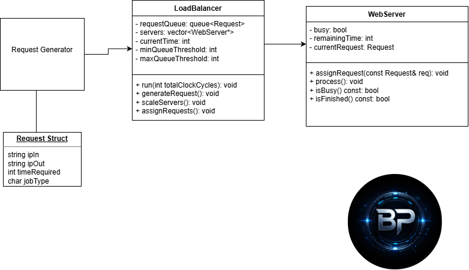

CSCE 412 - Cloud Computing
CSCE 412 covers the fundamentals of cloud computing, including distributed systems, virtualization, storage, and networking in cloud environments. This page serves as a hub for course-related content, assignments, and resources.
Projects and Assignments

Project 3
The UML diagram illustrates a load balancing system composed of four main components: a Request Generator, a Request struct, a LoadBalancer class, and a WebServer class. The Request Generator creates incoming requests, which are stored in a queue managed by the LoadBalancer. The LoadBalancer distributes these requests to dynamically managed WebServer instances based on availability and queue thresholds. Each WebServer processes one request at a time until completion. The diagram highlights the relationships between components, the flow of requests, and the system’s ability to scale servers dynamically. You can check out my project's Doxygen documentation here.